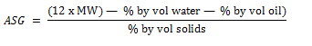
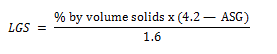

Basic solids analysis calculations
NOTE : Steps 1 — 4 are performed on high salt content muds. For low
chloride muds begin with Step 5.
Step l
Percent by volume saltwater (SW)
SW = (5.88 x 10-8) x [(ppm Cl)1.2] x % by vol water
Step 2
Percent by volume suspended solids (SS)
SS = 1OO — % by vol oil — % by vol SW
Step 3
Average specific gravity of saltwater (ASGSW)
ASGSW = (ppm C)0.95 x (1.94 x 10-6) + 1
Step 4
Average specific gravity of solids (ASG)
Step 5
Average specific gravity of solids (ASG)

Step 6
Percent by volume low gravity solids (LGS)

Step 7
Percent by volume barite
Barite % by vol = % by vol solids — % bý vol LGS
Step 8
Pounds per barrel barite
Barite (lb/bbl) = % by vol barite x 14.71
Step 9
Bentonite determination :
If cation exchange capacity (CEC) / methylene blue test (MBT) of shale and mud are KNOWN :
Where ;
S = CEC of shale
M = CEC of mud
Bentonite % by vol = bentonite (lb/bbl) ÷ 9.1
If the cation exchange capacity (CEC)/ methylene blue test(MBT) of SHALE
is UNKNOWN :
Where M = CEC of mud
b. Bentonite (lb/bbl) = bentonite % by vol 9.1
Step 10
Drilled solids % by volume
Drilled solids % by vol = LGS % by vol – bentonite % by vol
Step 11
Drilled solids (lb/bbl)
Drilled solids (lb/bbl) = drilled solids % by vol x 9.1
Case : Mud weight = ppg
Chlorides = ppm
CEC of mud = lb/bbl
CEC of shale = lb/bbl
Retort Analysis :
Water = % by volume
Oil = % by volume
Solids = % by volume